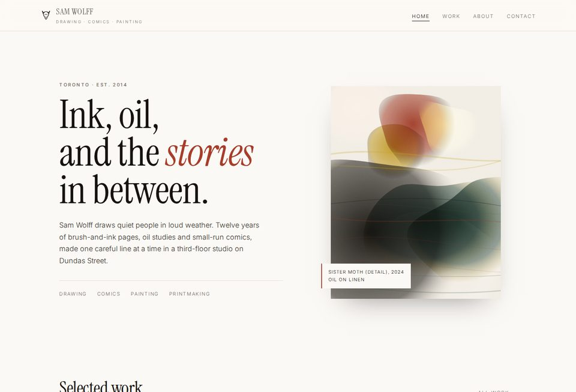

Sample 01 · samwolff1
Atelier
Gallery minimalMuseum-quiet white space, Instrument Serif display type and an asymmetric grid. The safest, most timeless of the five — reads as a serious contemporary artist's site.
- Asymmetric work grid
- Full-screen lightbox
- Sticky slim header